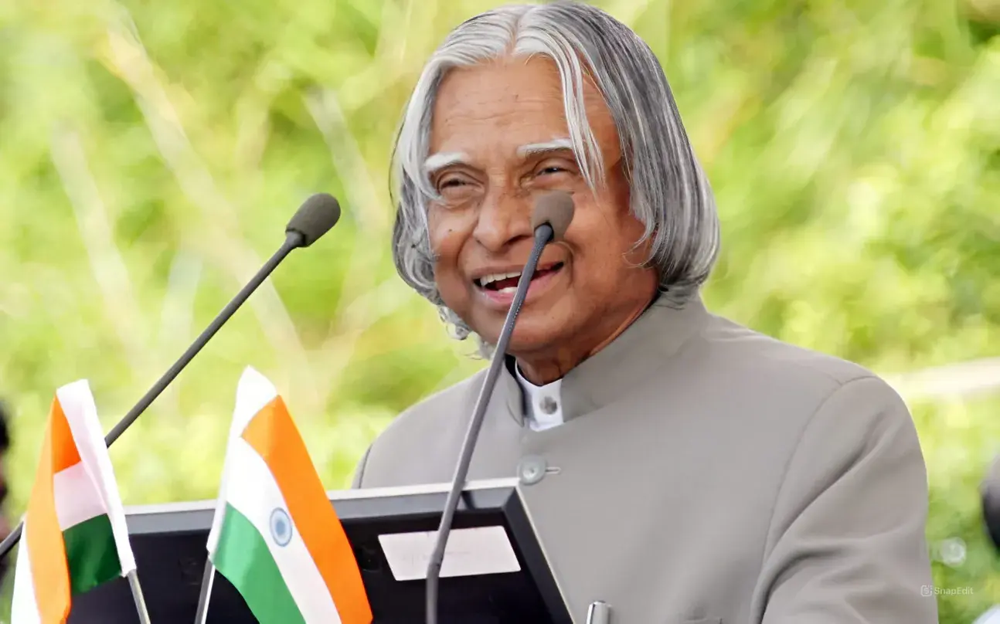

1931-2015
""Excellence is a continuous process and not an accident.""
Great personalities are not born every day; they are born once in a century and are remembered for millennials to come.
One such great personality that we will always be proud of is Dr. APJ Abdul Kalam.
His full name was Avul Pakir Jainulabdeen Abdul Kalam, born in Rameswaram of Madras Presidency on 15th October 1931 and
died on July 27, 2015, Shillong. He was an Indian Scientist and also a politician leader, who later became the 11th President of India.
He played an important role in the development of India’s missile and nuclear weapons program.